תוכנת הנקודות - מדריך למשתמש
ניווט מהיר
לחץ על סעיף כדי לקפוץ אליו.
התחלה מהירה
אם אתם מתחילים עכשיו – אלה הפעולות שיעזרו לכם לעלות לאוויר מהר, בלי פספוסים:
- בחרו מחשב מרכזי קבוע – רצוי מחשב העמדה הציבורית או שרת יציב.
- הגדירו תיקייה משותפת אחת שכל העמדות יתחברו אליה (ניהול/מורה/ציבורית).
- וודאו הרשאות כתיבה לתיקייה המשותפת לכל המחשבים הרלוונטיים.
- התחילו פשוט – קודם יבוא תלמידים והצגת נקודות; רק אחרי זה מוסיפים מצגת/בונוסים/פרסומות.
Ctrl+P → Save as PDF. כדי שהרקע/צבעים יופיעו, הפעילו גם Background graphics (ב"הגדרות נוספות").
חלקי המערכת (איפה כל דבר נמצא?)
הפעלה ראשונה (הגדרה ראשונית)
בהפעלה הראשונה התוכנה תפתח אשף קצר שמטרתו לחבר את העמדה לתיקייה המשותפת. זה השלב שבו קובעים “איפה הנתונים יושבים”.
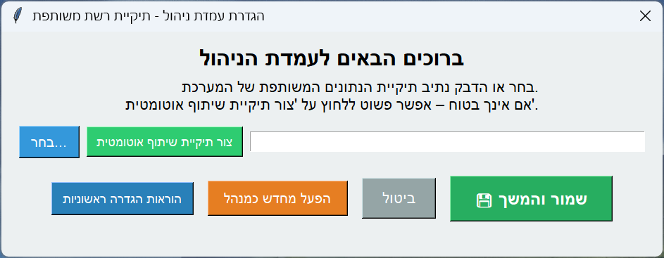לא מומלץ ליצור תיקייה משותפת חדשה רק כדי “להמשיך הלאה”, כי זה עלול ליצור פיצול נתונים (מערכת חדשה עם נתונים אחרים) ולשבש את העבודה בין עמדות.
לפני כל שינוי, יש לבדוק: חיבור לרשת, שהמחשב המרכזי דולק, שהנתיב נכון, ושיש הרשאות כתיבה לתיקייה.
אפשרות 1 – כבר יש לכם תיקייה משותפת
- הדביקו את נתיב הרשת בשדה (לדוגמה:
\\SERVER\נתוני תוכנת הנקודות). - אשרו והמשיכו. התוכנה תיצור את קובצי הנתונים הדרושים אם הם לא קיימים.
אפשרות 2 – התוכנה יוצרת תיקייה אוטומטית
- אם מופיעה אפשרות "הפעל מחדש כמנהל" – מומלץ להשתמש בה.
- אחרי פתיחה מחדש, בחרו "צור תיקיית שיתוף אוטומטית".
- שמרו לעצמכם את נתיב התיקייה (Ctrl+C) – כך קל להגדיר עמדות נוספות.
עמדת ניהול – הסבר מלא לפי מסכים
עמדת הניהול היא “הבקרה המרכזית” – כאן מנהלים תלמידים, נקודות, קבצים, הודעות, בונוסים ורישוי.
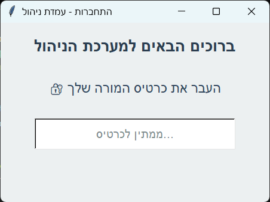- כותרת מסך – מציגה שמדובר בכניסה לעמדת הניהול.
- הנחיה – “העבר את כרטיס המורה שלך”. הכוונה היא לכרטיס שמוגדר למורה/מנהל במערכת.
- אייקון מנעול – מציין שזהו מסך מוגן (כניסה מורשית בלבד).
- שדה המתנה – במצב רגיל לא מקלידים כאן; המערכת “ממתינה לכרטיס” מהקורא.
- שורת כפתורים עליונה – קיצור דרך לחלונות מרכזיים (שדרוגים/הודעות/בונוסים/מורים/הגדרות/קופה וכו׳). מטרת הסרגל היא להגיע מהר לתפעול יום־יומי.
- טבלת תלמידים – הלב של עמדת הניהול. כאן רואים את התלמידים לפי שורות, ומבצעים עדכוני נקודות/חיפוש/בחירה.
- עמודות בטבלה – בדרך כלל כוללות פרטי זיהוי (מס׳/כיתה/שם), אמצעי זיהוי (מס׳ כרטיס), מצב/הודעה, ונקודות.
- בחירה של תלמיד – לחיצה על שורה מסמנת תלמיד לפעולות כמו עריכה/מחיקה/עדכון נקודות/הקצאת כרטיס.
- אזור פעולות תחתון – כולל פעולות מהירות (כמו הוספה/עריכה/מחיקה/ייצוא/סנכרון) וכן אזור סטטוס למעקב אחרי הפעולה האחרונה.
הגדרות תצוגה

- מסך מלא – מפעיל/מכבה תצוגת מסך מלא בעמדה הציבורית (מומלץ כדי למנוע “בריחה” לחלונות אחרים).
- אורך/רוחב (כיוון) – קובע האם העמדה הציבורית מוצגת לאורך או לרוחב, בהתאם למסך ולמיקום הפיזי.
- רקע – בחירת תמונת רקע/רקע צבע לעמדה הציבורית (משפיע על תחושת “מבצע” ועל קריאות).
- מצגת – הפעלה/כיבוי של הצגת תמונות מתחלפות ברקע (אם מוגדר).
- טיפ תפעולי – אם אתם עובדים עם כמה עמדות, הגדירו את הרקע/מצגת כך שיפנו לקבצים מתוך התיקייה המשותפת בלבד.
- תיקיית תמונות למצגת – מאיפה התמונות נלקחות (מומלץ נתיב בתוך התיקייה המשותפת כדי שכל העמדות יראו אותה מצגת).
- פריסת רקע – התאמת אופן הצגת הרקע על המסך (למשל מתיחה/התאמה/מרכוז), לפי האפשרויות במסך.
- מונטאז׳ – אם מופעל, מציג כמה תמונות יחד/ברצף כדי ליצור מסך “חי”.
- דגש חשוב – כל קובצי המדיה (רקעים/מצגת/אודיו/לוגו) מומלץ לשמור בתיקייה המשותפת. כך לא נוצר מצב שבעמדה אחת רואים משהו ובעמדה אחרת לא.
הגדרות מערכת
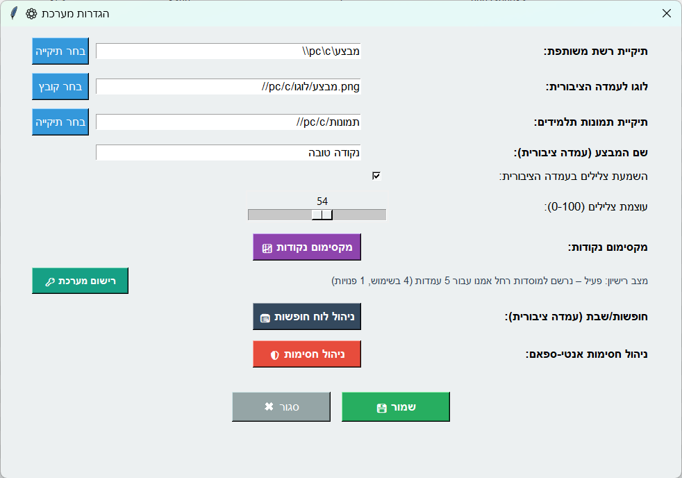- תיקייה משותפת – הנתיב שבו נשמרים הנתונים וקובצי ההגדרות. כל העמדות חייבות להתחבר לאותו נתיב.
- לוגו – הלוגו שמופיע במסכים (ובעבור עמדת קופה יכול לשמש גם להדפסות, לפי ההגדרה).
- תיקיית תמונות תלמידים – נתיב לתמונות תלמידים (מומלץ מאוד שיהיה בתיקייה משותפת).
- מקסימום נקודות – הגדרת תקרת נקודות במערכת (כללים לפי תאריך + אכיפה: אזהרה/חסימה).
- רישוי – איפה רואים סטטוס רישוי ואיפה מזינים קוד הפעלה במידת הצורך.
- מטרה – להגדיר מתי העמדה הציבורית פעילה ומתי היא חסומה (למשל שבת/חגים/חופשות), כדי למנוע תיקופים בזמנים לא רצויים.
- מה בעצם מגדירים – ימים ושעות שבהם יש חסימה (או להפך: חלונות זמן מותרים), לפי ההגדרות במסך.
- צור תבנית חגים – יוצר לוח אוטומטי על בסיס תבנית חגים/שבתות, וחוסך הזנה ידנית של כל תאריך.

רישוי / רישום מערכת
רישום המערכת מתבצע בעמדת הניהול. במסך הרישוי רואים “קוד מערכת” ומזינים “קוד הפעלה”.
אם קיים רישיון פעיל, בדרך כלל יוצגו פרטי הרישיון, ובאפשרות “החלפת רישיון” ניתן להזין קוד חדש.
לביצוע רישום יש להיכנס כאן.
ייבוא תלמידים (Excel) – מבנה מומלץ
כדי שהייבוא יעבוד חלק, מומלץ לשמור על מבנה עקבי בקובץ ה־Excel.
| עמודות חובה | מס' סידורי, שם משפחה, שם פרטי, כיתה |
|---|---|
| עמודות אופציונליות | נתיב תמונה, מס' כרטיס, מס' נקודות, הודעה פרטית |
| טיפ למס' כרטיס | לשמור את העמודה בפורמט “טקסט” כדי לשמר אפסים מובילים ומספרים ארוכים. |
- מתי משתמשים בזה – אחרי ייבוא ראשוני, להוספת תלמיד חדש שהצטרף באמצע השנה, או לתיקון נקודתי של תלמיד שלא נכנס לייבוא.
- שדות בסיסיים – מס' סידורי/כיתה/שם, ובהמשך ניתן להוסיף מס' כרטיס ותמונה (אם עובדים עם תצוגת תמונות).
- המלצה – אם מוסיפים הרבה תלמידים, עדיף לבצע שוב ייבוא/סינכרון מסודר. להוספה ידנית משתמשים בעיקר ליחידים.
*דוד*) כדי לסמן לצוות – והסימון לא יוצג בעמדה הציבורית.
כפתורי מסך עיקריים (מה כל כפתור עושה?)
- ייבוא – טעינת תלמידים מקובץ Excel למערכת.
- ייצוא – יצירת דוחות (תלמידים, נוכחות לפי בונוסים, היסטוריית נקודות ועוד).
- סינכרון – מעדכן את האקסל מהמערכת בעמודות: כרטיס/נקודות/הודעה פרטית (ייצוא בלבד).
- רענון – טעינה מחדש מהמסד (שימושי כשהעמדה הציבורית עדכנה מידע).
- שדרוגים – צבעי ניקוד, מטבעות/יהלומים, יעדים ופס התקדמות.
- הודעות כלליות – ניהול הודעות סטטיות/לפי נקודות/אישיות/חדשות/פרסומות.
- בונוס מיוחד – מצב בונוס חד־פעמי/מבצע.
- בונוס זמנים – בונוסים אוטומטיים לפי שעות (כולל שעות שונות לכיתות).
- ניהול מורים – מורים, הרשאות, שיוך כרטיס מורה, בונוס מורה.
- הגדרות מערכת – תיקייה משותפת, רישוי, לוגו/שם מבצע, רקעים, מצגת, סטטיסטיקות.
- הגדרות תצוגה – איך נראית העמדה הציבורית (כיוון, פנלים, רקע/מצגת).
עדכון נקודות (כולל עדכון מהיר)
- עדכון ידני – מוסיפים/מפחיתים נקודות לתלמיד בטבלה.
- עדכון מהיר (⚡) – פעולה אחת לקבוצה (לפי כרטיס בסריקה / טווח מס' סידורי / כל תלמידי כיתה / תלמידים נבחרים / כל תלמידי בית הספר).
- סוג פעולה – הוספה (+), הפחתה (-), או קביעה לערך מוחלט (=).
תיקון זמן תיקוף / הגעה (ידני)
- מטרה – לתקן רישום תיקוף/הגעה אחורה (לפי תאריך+שעה) כאשר יש צורך בתיקון נתונים.
- איך משתמשים – בוחרים תלמיד, פותחים את חלון הניהול שלו, ובוחרים תיקון זמן תיקוף לפי תאריך+שעה.
- מה זה משפיע – הרישום נשמר כאילו התיקוף בוצע בזמן שנבחר, כולל החלת כללי בונוס זמנים בהתאם.
ניהול מורים והרשאות
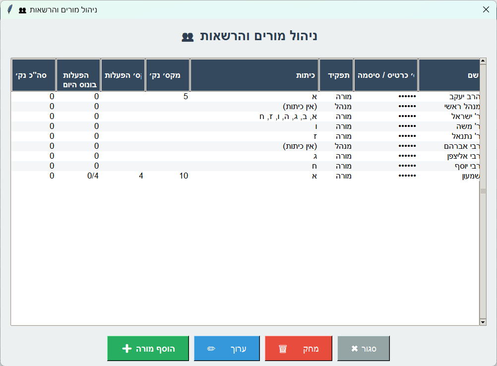- טבלת מורים – כל שורה היא מורה אחד במערכת.
- שם – שם המורה כפי שיוצג במערכת ובמסכי ניהול.
- כרטיס / סיסמה – אמצעי כניסה/זיהוי של המורה (לעתים מוצג במסך כנקודות/כוכביות מטעמי פרטיות).
- תפקיד – האם המשתמש הוא “מורה” רגיל או “מנהל”.
- כיתות – לאילו כיתות המורה משויך (א, ב, ג… או “אין כיתות” אם לא הוגדר).
- מקס' נק' – מגבלה של נקודות שהמורה יכול להעניק לתלמיד בסבב/בפעולה (לפי הגדרת המערכת).
- מקס' הפעלות – מגבלה על מספר פעולות שהמורה יכול לבצע (לפי הגדרה).
- הפעולות בונוס היום – כמה פעולות כבר נוצלו היום בהקשר של בונוס מורה/מנגנוני בונוס רלוונטיים.
- סה"כ נק' בונוס היום – כמה נקודות בונוס (לפי מורה) כבר חולקו היום.
- הוסף מורה – יצירת מורה חדש (שם, כרטיסים/סיסמה, הרשאות, כיתות).
- ערוך – עריכת המורה שנבחר (מעבר למסך “עריכת מורה”).
- מחק – מחיקת מורה (בזהירות, אם משתמשים בכרטיסים בעמדה הציבורית).
- סגור – יציאה מהחלון.
- שם המורה – שם שיוצג בטבלאות ובדוחות.
- מספר כרטיס 1 / 2 / 3 – אפשר להגדיר למורה כמה כרטיסים (למשל כרטיס עובד + תג חלופי). שדות ריקים פשוט לא בשימוש.
- סיסמה (אופציונלי) – מאפשרת כניסה/ניהול גם ממחשב שאין בו קורא כרטיסים, לפי מה שמוגדר במערכת.
- מנהל (הרשאות מלאות) – סימון משתמש כמנהל; מנהל יכול להיכנס לעמדת ניהול ולבצע פעולות נרחבות לפי ההרשאות במערכת.
- מורה יכול לשנות מס' כרטיס לתלמיד – אם מסומן, המורה יוכל לערוך מספר כרטיס של תלמיד (שימושי כשמחליפים כרטיס).
- מורה יכול לשנות תמונת תלמיד – אם מסומן, המורה יוכל לעדכן/להחליף תמונת תלמיד.
- כיתות – שיוך כיתות למורה. לחצן בחר... מאפשר לבחור כיתות מהרשימה.
- מקסימום נקודות לבונוס מורה – מגבלת נקודות לבונוס מורה (לכל תלמיד בסבב, או לפי ההגדרה שמופיעה בהערה).
- מקסימום מספר הפעלות בונוס למורה זה – מגבלת מספר הפעלות/פעולות לבונוס מורה עבור המורה הזה (אם משאירים ריק – ברירת מחדל/ללא מגבלה לפי המערכת).
- שמור – שמירת השינויים.
בונוסים ומצבים מיוחדים
בונוסים מאפשרים לחלק נקודות בצורה חכמה (זמנים/מורה/מבצע מיוחד) ולבנות מוטיבציה לאורך זמן.
- בונוס זמנים – בונוסים אוטומטיים לפי שעות (כולל שעות שונות לכיתות).
- בונוס מורה – בונוס ייעודי לפי מורה (מופעל בעמדה הציבורית).
- בונוס מיוחד – מצב “מבצע” חד־פעמי/כללי לכל תלמיד.
בונוס זמנים
- אפשר להגדיר כמה כללים במקביל (כמה שורות).
- אפשר להגדיר שעות שונות לכיתות שונות.
- אפשר להגדיר בונוס עם 0 נקודות כדי להשתמש בזה כדו"ח נוכחות: התיקוף הראשון נשמר, ובנוסף ניתן להגדיר שלא יוצג כלל רישום/הודעה בעמדה הציבורית.
בונוס מורה
- לכל מורה אפשר להגדיר בונוס נפרד.
- הפעלת הבונוס נעשית בעמדה הציבורית עם כרטיס מורה. ניתן להגדיר למורה כמה מספרי כרטיסים כדי לאפשר זיהוי בכרטיס/סיסמה לפי הצורך (במסכים שאינם ציבוריים).
- כל תלמיד מקבל את הבונוס פעם אחת בסבב.
בונוס מיוחד
- מצב “מבצע” שבו כל תלמיד מקבל תוספת חד־פעמית כשהמצב פעיל.
- בדרך כלל מפעילים/מסיימים בעמדה הציבורית בעזרת כרטיס מאסטר 2 (לפי ההגדרה).
בונוס זמנים
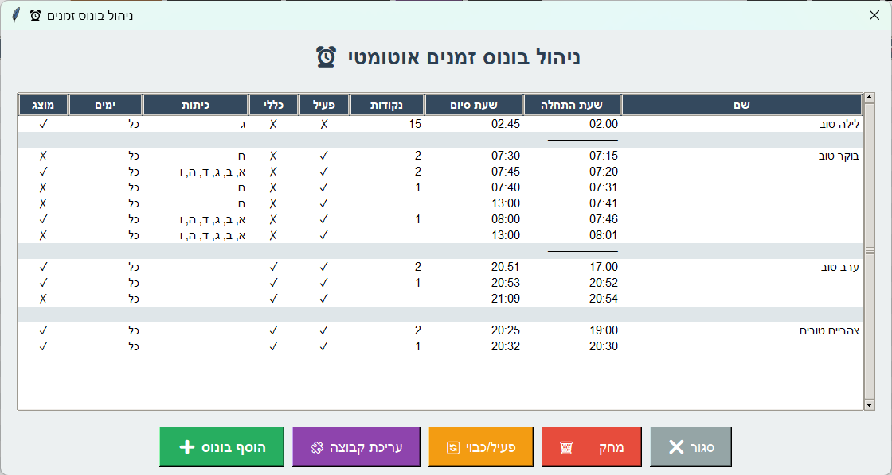- טבלת כללים – כל שורה היא כלל אחד שמעניק נקודות בטווח זמן מוגדר (אפשר כמה כללים במקביל).
- שם – שם הכלל/הקבוצה (מומלץ שם קצר וברור, למשל “בוקר טוב”, “ערב טוב”).
- שעת התחלה / שעת סיום – חלון הזמן שבו הכלל פעיל (בדרך כלל לפי שעות היום).
- נקודות – כמה נקודות הכלל מעניק לתלמיד בעת תיקוף שעומד בתנאים.
- פעיל – האם הכלל מופעל כרגע (✓ פעיל, X כבוי).
- כללי – האם הכלל מוגדר ככלל “כללי” (ברמת מערכת/לכולם) או כלל מיוחד לפי שיוך (לפי ההגדרות בעמודה “כיתות”).
- כיתות – לאילו כיתות הכלל חל. יכול להיות “כל” או רשימה של כיתות (למשל א,ב,ג...).
- ימים – לאילו ימים בשבוע הכלל חל. יכול להיות “כל” או יום מסוים/סט ימים.
- מוצג – האם ההודעה/הרישום יוצגו בעמדה הציבורית בעת תיקוף לפי כלל זה (✓ מוצג, X מוסתר). שימושי במיוחד כשנקודות=0 ורוצים “נוכחות שקטה”, ועדיין לקבל רישום מלא שמופיע בייצוא דו"ח נוכחות.
- הוסף בונוס – יצירת כלל חדש.
- עריכת קבוצה – עריכה מרוכזת של כלל/קבוצת כללים (למשל אותו שם עם כמה שורות זמן).
- פעיל/כבוי – שינוי מצב הכלל שנבחר (בלי למחוק אותו).
- מחק – מחיקת הכלל שנבחר.
- סגור – יציאה מהחלון.
- בונוס – שם הבונוס/הקבוצה. כל השורות בחלון שייכות לאותו שם (למשל “בוקר טוב”).
- משעה / עד שעה – זמן התחלה וזמן סיום לכל שורה. כל שורה היא “חלון זמן” נפרד.
- נקודות בונוס – כמות הנקודות שמוענקת בתיקוף שעומד בתנאים של השורה.
- כללי – סימון אם השורה היא כלל כללי (חל בלי שיוך מיוחד), לעומת כלל מותנה כיתות/ימים.
- כיתות – לחצן בחר... לבחירת כיתות ספציפיות. אפשר להשאיר ריק/ברירת מחדל כדי שיחול על כולם (בהתאם לשורה ולכללי המערכת).
- ימים – לחצן בחר... לבחירת ימים בשבוע (למשל א,ב,ג,ד,ה) או “כל”.
- מוצג – האם התלמיד יראה הודעה/רישום בעמדה הציבורית עבור הבונוס הזה (סימון ✓) או שהפעולה תהיה “שקטה”.
- מחיקה (כפתור אדום “מחק”) – מחיקת שורה ספציפית מתוך הקבוצה.
- שכפול (כפתור עם חץ) – העתקת שורה קיימת כדי ליצור וריאציה דומה (למשל אותה הגדרה עם שינוי שעה/כיתות).
- בחירת כיתה מהירה (רשימה נפתחת) – קיצור דרך להזין סט כיתות נפוץ בשורה (אם מוגדר במערכת).
- הוסף שורה – הוספת חלון זמן חדש לאותו בונוס.
- שמור – שמירת כל השורות והחלת השינוי.
- ביטול – יציאה בלי לשמור שינויים.
- שדה מספר (כמות נקודות) – כמה נקודות יקבל כל תלמיד בעת תיקוף בזמן שהבונוס המיוחד פעיל.
- הפעל בונוס מיוחד – מפעיל את מצב ה“מבצע”. מרגע ההפעלה, כל תלמיד שיתקף יקבל את התוספת החד־פעמית לפי ההגדרה.
- הערת עזרה – ההסבר במסך מזכיר שהפעלה/כיבוי נעשים מהעמדה הציבורית (לרוב באמצעות כרטיס מאסטר 2 לפי ההגדרה).
ניהול צלילים/צבעים/מטבעות
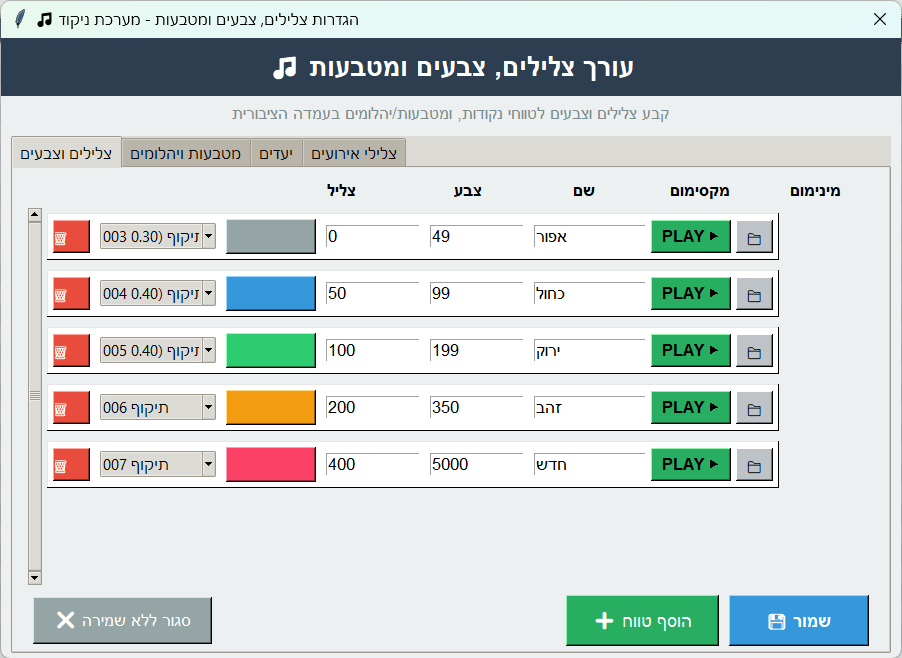- שורת טווח – כל שורה מייצגת טווח נקודות (מינימום–מקסימום) עם צבע וצליל.
- מינימום / מקסימום – קובעים באיזה ניקוד התלמיד יקבל את הצבע/הצליל הזה.
- שם – תיאור קצר לטווח (למשל “אפור/כחול/ירוק”).
- צבע – צבע התצוגה בעמדה הציבורית עבור תלמידים בטווח הזה.
- צליל – בחירה מרשימה של צליל מובנה או מותאם, שינוגן בעת תיקוף בטווח הזה.
- PLAY – בדיקת הצליל במקום.
- אייקון תיקייה – בחירת קובץ צליל חיצוני (מותאם אישית).
- אייקון מחיקה – הסרת שורה/טווח מהרשימה.
- הוסף טווח – מוסיף שורה חדשה לטווח נקודות נוסף.
- שמור / סגור ללא שמירה – שמירת ההגדרות או יציאה בלי לשנות.
מטבעות ויהלומים
מטרת המטבעות/יהלומים היא להוסיף “שכבה” לתצוגה בעמדה הציבורית, כדי שתלמיד לא יגיע למצב של אלפי נקודות ויאבד עניין במספרים גבוהים. במקום להסתכל רק על נקודות, אפשר להציג המרה/סיווג ויזואלי (מטבע/יהלום, צבע וסוג).
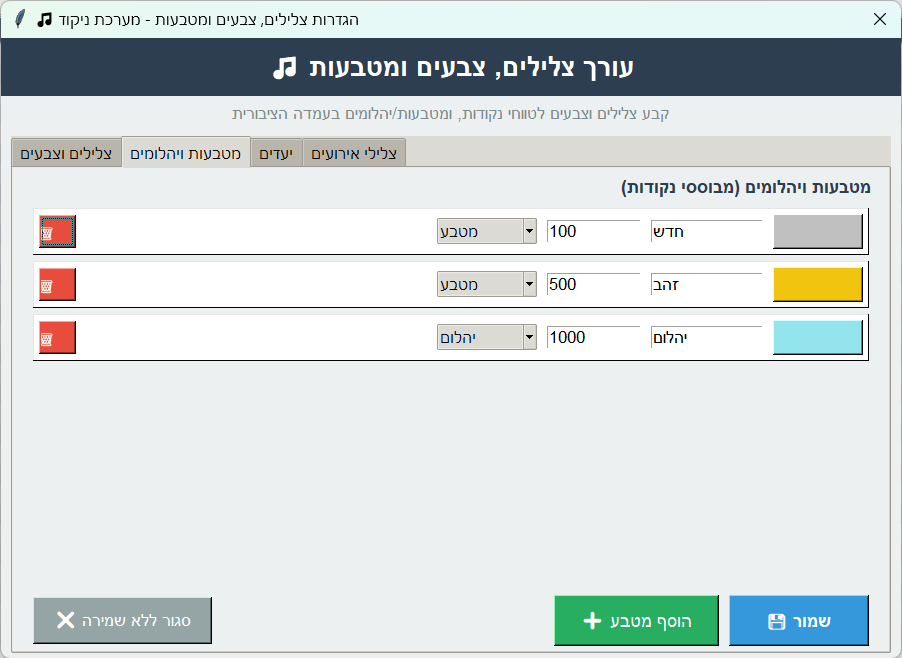- סוג – בחירה אם הפריט הוא מטבע או יהלום (סוג הבונוס הווירטואלי).
- ערך – כמה נקודות כל מטבע/יהלום “שווה” (למשל: יהלום כחול = 1000 נקודות, מטבע זהב = 500 נקודות).
- דוגמה – אם לתלמיד יש 1700 נקודות, הוא יכול לראות: יהלום כחול + מטבע זהב + 200 נקודות.
- שם – כותרת שמוצגת לתלמיד (למשל “זהב”, “יהלום”).
- צבע – צבע שמייצג את המטבע/היהלום בתצוגה.
- הוסף מטבע – מוסיף שורה חדשה.
- שמור / סגור ללא שמירה – שמירת ההגדרות או ביטול.
- הפעל פס יעד – הפעלה/כיבוי של פס התקדמות בעמדה הציבורית.
- סוג יעד – בחירה אם היעד מחושב בצורה מוחלטת (מס׳ נקודות) או יחסית (אחוזים).
- יעד מוחלט (נקודות) – כמה נקודות צריך כדי להגיע ל־100%.
- יעד יחסי (% מקסימום נקודות) – אם עובדים ביחס למקסימום/מסגרת מוגדרת, אפשר לקבוע את האחוז.
- הצג טקסט אחוזים על הפס – מציג לתלמיד מספר/אחוז התקדמות על גבי הפס עצמו.
- צבע מלא / צבע ריק / צבע מסגרת – התאמת צבעים כדי שהפס ייראה ברור על הרקע.
- שמור – שמירת ההגדרה לכל העמדות שמחוברות לאותה תיקייה משותפת.
- רשימת אירועים – בצד ימין מופיעים אירועים במערכת (למשל תיקוף רגיל, כרטיס לא מזוהה, בונוסים וכו׳).
- בחירת צליל – לכל אירוע יש רשימה נפתחת של צלילים מובנים.
- אייקון תיקייה – בחירת קובץ אודיו חיצוני לאירוע הספציפי.
- PLAY – בדיקה מיידית של הצליל כדי לוודא שהוא מתאים ולא חזק מדי.
- הערה שימושית – אם לא מגדירים צליל לאירוע, המערכת תשתמש בברירת מחדל.
- שמור / סגור ללא שמירה – שמירת כל הצלילים או יציאה בלי לשנות.
 עמדה ציבורית – מה קורה שם?
עמדה ציבורית – מה קורה שם?
העמדה הציבורית מיועדת לתלמידים: סורקים כרטיס ורואים נקודות, הודעות והתקדמות. היא גם המקום שבו מפעילים/מסיימים מצבים מסוימים עם כרטיסי מאסטר.
מה התלמיד רואה בסריקה
- נקודות – בצבע לפי טווח (בהגדרת שדרוגים).
- הודעות – כללית / לפי נקודות / אישית.
- תמונה – אם קיימת ומופעלת בהגדרות.
- טיקר חדשות – אם הוגדר בחלון “חדשות”.
כרטיסי מאסטר
| כרטיס מאסטר 1 | יציאה/תפריט מפעיל בעמדה הציבורית. |
|---|---|
| כרטיס מאסטר 2 | הפעלה/סיום של מצבים מסוימים (כפי שהוגדר במערכת). |
הודעות, חדשות ופרסומות
חלון ההודעות מאפשר לשלב מסרים מעודדים, מידע לתלמידים, והצגה מתקדמת (טיקר/פרסומות).
סוגי הודעות – איך בוחרים?
| הודעות כלליות | לכולם. אפשר “תמיד” או “רק בסריקה”. |
|---|---|
| הודעות לפי נקודות | המערכת בוחרת לפי טווח הניקוד של התלמיד. |
| הודעות אישיות | לתלמיד ספציפי (מתוך הניהול או מהאקסל). |
| חדשות | טקסטים מתחלפים ברצועה התחתונה. |
| פרסומות | חלון קופץ עם טקסט/תמונה, שמופיע לפי הגדרה או אחרי זמן ללא תיקופים. |
הודעות כלליות
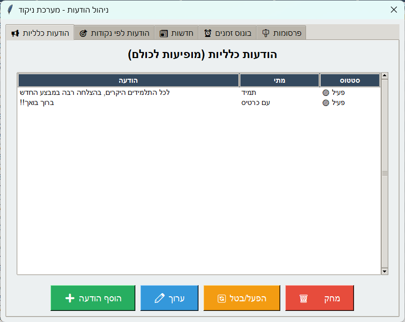- טאבים עליונים – מעבר בין סוגי הודעות (כלליות/לפי נקודות/חדשות/בונוסים/פרסומות).
- טבלת הודעות – כל שורה היא הודעה אחת.
- עמודת “מתי” – קובעת אם ההודעה מופיעה תמיד, או רק בעת הצגת כרטיס/סריקה.
- סטטוס – האם ההודעה פעילה כרגע.
- הוסף הודעה – יצירת הודעה חדשה.
- ערוך – שינוי ההודעה/תוכן/הגדרות.
- הפעל/בטל – מאפשר להשאיר הודעה במערכת אבל לא להציג אותה.
- מחק – הסרת הודעה.
הודעות לפי טווח נקודות
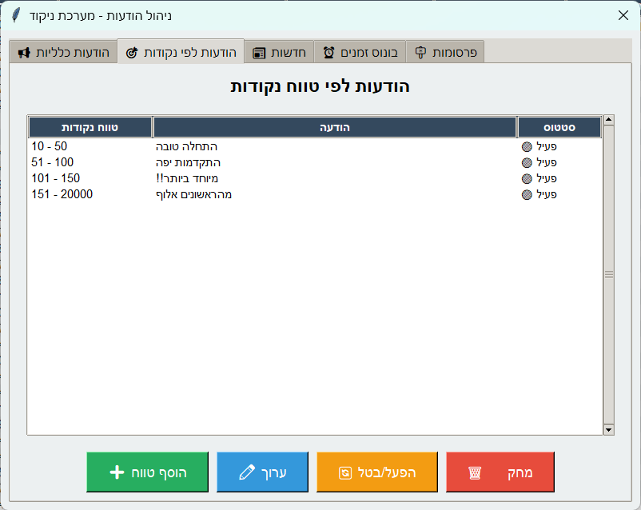- טווח נקודות – לכל שורה מגדירים “מ־X עד Y”.
- הודעה – הטקסט שיוצג לתלמיד אם הוא נמצא בטווח הזה.
- סטטוס – האם שורת ההודעה פעילה.
- הוסף טווח – יצירת טווח חדש עם הודעה מתאימה.
- ערוך / הפעל/בטל / מחק – ניהול השורה שנבחרה.
חדשות (טיקר)
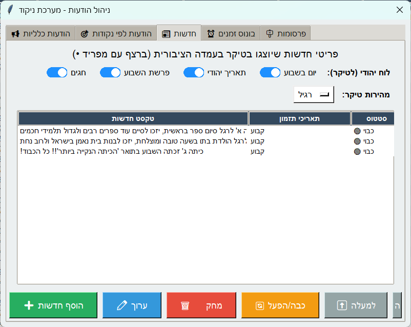- מתגים עליונים – בחירת “מקורות”/סוגי חדשות שיופיעו בטיקר (למשל ימי השבוע, תאריך ייחודי, חגים וכו׳).
- מהירות טיקר – בחירה מרשימה (איטי/רגיל/מהיר) כדי להתאים את הקריאות לתלמידים.
- טבלת חדשות – כל שורה היא פריט חדשות אחד.
- תאריך תזמון – אם מוגדר, הפריט יופיע רק בטווח התאריכים הרלוונטי.
- סטטוס – האם הפריט פעיל או כבוי.
- הוסף חדשות – יצירת פריט חדש.
- ערוך / מחק – ניהול הפריט שנבחר.
- כבה/הפעל – השבתה/הפעלה של פריט בלי למחוק אותו.
- טקסט חדשות – הטקסט שיופיע ברצועת הטיקר.
- תזמון חדשות (אופציונלי) – אם ממלאים תאריכים, הפריט יוצג רק בין התאריך התחלה לתאריך סיום.
- תאריך התחלה / תאריך סיום – פורמט תאריך כפי שמופיע בשדה (DD.MM.YYYY).
- השאר ריק – אם לא רוצים תזמון, משאירים את אזור התאריכים ריק/ברירת מחדל לפי ההנחיה במסך.
- שמור – שמירת הפריט וחזרה לרשימת החדשות.
הודעת "הגעת ראשון להיום"
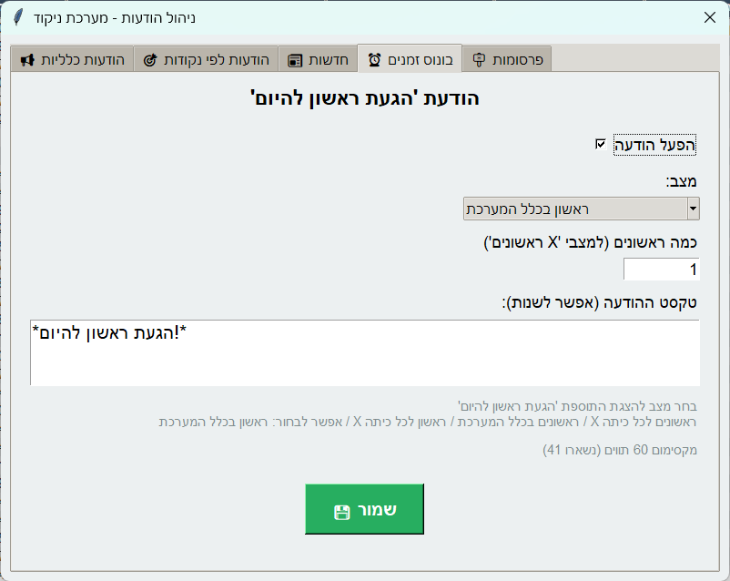- הפעל הודעה – הפעלה/כיבוי של הפיצ'ר. כשהוא פעיל, יופיע מסר לתלמידים הראשונים לפי הכללים.
- מצב – בחירה של “למי ההודעה תפעל”: למשל ראשון בכיתה, ראשונים במערכת, או “X ראשונים” (בהתאם לתצורה).
- כמה ראשונים (למצב 'X ראשונים') – מספר התלמידים הראשונים שיקבלו את ההודעה באותו יום.
- טקסט ההודעה – ההודעה שתוצג בעמדה הציבורית (אפשר לשנות ניסוח, ולהשתמש בסימני הדגשה/כוכביות לפי השיטה שלכם).
- בחירת מצב – ההערה בתחתית מזכירה שניתן לבחור “ראשון לכל כיתה” או “ראשון בכלל המערכת”, כדי להתאים את התמריץ לגודל בית הספר.
- שמור – שמירת ההגדרה והחלתה על העמדות שמחוברות לאותה תיקייה משותפת.
פרסומות
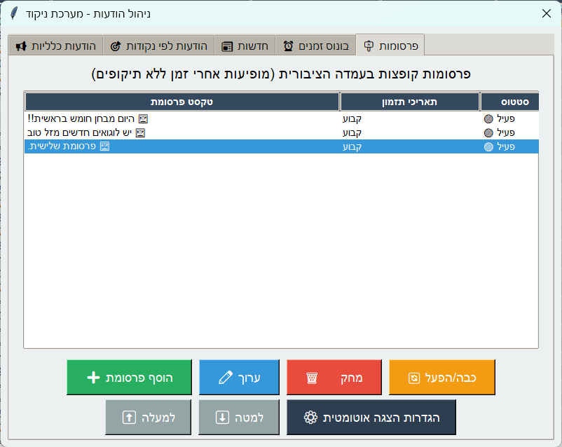- טבלת פרסומות – כל שורה היא פרסומת אחת (טקסט, תזמון, סטטוס).
- טקסט פרסומת – הטקסט שיופיע בחלון הקופץ בעמדה הציבורית.
- תאריך תזמון – אם מופיע “קבוע”, הפרסומת פעילה תמיד; אם מוגדר טווח תאריכים היא תופיע רק בו.
- סטטוס – האם הפרסומת פעילה כרגע.
- הוסף פרסומת – יצירת פרסומת חדשה.
- ערוך – שינוי טקסט/תמונה/תזמון של הפרסומת שנבחרה.
- מחק – הסרת הפרסומת.
- כבה/הפעל – השבתה/הפעלה של פרסומת בלי למחוק אותה.
- למעלה/למטה – שינוי סדר הפרסומות (משפיע על סדר ההופעה כשיש כמה פרסומות).
- הגדרות הצגה אוטומטית – מעבר למסך שמגדיר אחרי כמה זמן ללא תיקופים להציג פרסומת, משך הצגה, ותדירות.
- טקסט פרסומת – תוכן שיוצג בחלון הפרסומת (אפשר משפט קצר/כמה שורות).
- תמונה (אופציונלי) – ניתן לצרף תמונה שתופיע לצד/מעל הטקסט (לפי תבנית הפרסומת בעמדה הציבורית).
- כפתור “בחר” – בחירת קובץ תמונה מהמחשב/תיקייה משותפת.
- כפתור “נקה” – הסרת התמונה המצורפת מהפרסומת.
- תזמון פרסומת (אופציונלי) – אם ממלאים תאריכי התחלה/סיום, הפרסומת תוצג רק בטווח הזה.
- תאריך התחלה / תאריך סיום – פורמט תאריך כפי שמופיע בשדה (DD.MM.YYYY).
- שמור – שמירה וחזרה לרשימת הפרסומות.
- אפשר הצגת פרסומות בעמדה הציבורית – מתג ראשי להפעלה/כיבוי של הצגת פרסומות.
- הצג אחרי X שניות ללא פעולות – כמה זמן של “שקט” (ללא תיקופים) צריך לעבור כדי לקפוץ פרסומת.
- הצג פרסומת למשך X שניות – כמה זמן הפרסומת תישאר על המסך לפני שתיעלם (אם אין תיקוף שמסתיר אותה קודם).
- זמן קפיצה בין פרסומות (שניות) – אם יש כמה פרסומות, זה הפער בין פרסומת לפרסומת.
- מסגרת סביב חלון הפרסומת – הדגשת גבולות חלון הפרסומת (עוזר לראות שזה “חלון” ולא חלק מהרקע).
- שמור – שמירת ההגדרות.
- ביטול – סגירת החלון בלי לשמור.
סדר עבודה מומלץ (כדי שהמערכת תרגיש “כמו מבצע” לאורך זמן)
- שבוע ראשון: יבוא תלמידים, כרטיסים, נקודות, הודעה כללית אחת פשוטה.
- אחרי שהכל יציב: צבעי ניקוד + יעד/פס התקדמות.
- אחר כך: חדשות (טיקר) – טקסטים קצרים ומעודדים.
- בהדרגה: בונוס זמנים / בונוס מורה / פרסומות / מצגת.
תקלות נפוצות (פתרון מהיר)
עמדה לא רואה תלמידים / הנתונים שונים בין עמדות
- בדקו שכל העמדות מחוברות לאותו נתיב תיקייה משותפת.
- בעמדת ניהול לחצו רענון.
אין הרשאות כתיבה לתיקייה המשותפת
- בדקו הרשאות שיתוף והרשאות NTFS.
- במידת הצורך, הגדירו יצירה אוטומטית של תיקייה עם “הפעל מחדש כמנהל”.
שיבוש בתצוגה (גדלים לא נכונים / טקסט חתוך / כפתורים “בורחים”)
- ב־Windows: היכנסו ל־הגדרות > מערכת > תצוגה והגדירו קנה מידה (Scaling) ל־100%.
- ודאו שה־רזולוציה מוגדרת ל־מומלץ (Recommended).
תצוגה שונה (לוגו/רקע/מצגת/אודיו) בין עמדות
- שימו את כל הקבצים בתיקייה המשותפת (או תיקיות משנה) והפנו אליהם משם.
חסימות אנטי־ספאם (לעמדות עם חוקים)
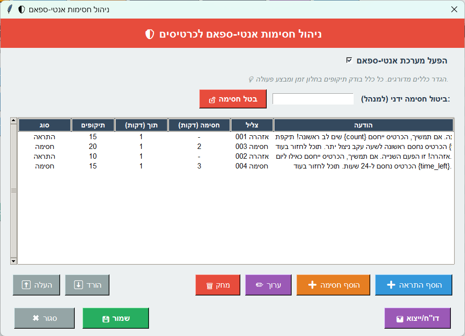
עמדת קופה (ברשיון מיוחד)
עמדת קופה מיועדת למימוש נקודות לרכישות, ניהול מוצרים וקטגוריות, והפעלת מנגנוני מכירה/הדפסות לפי ההגדרות.
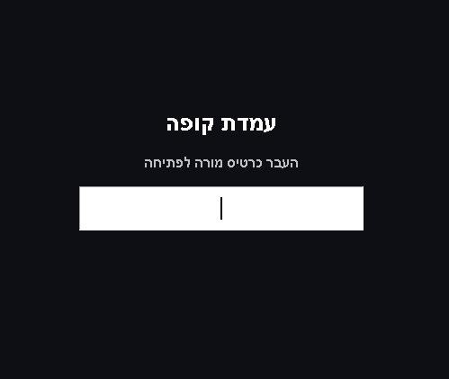- מטרת המסך – לפתוח “סשן קופה” מאובטח לפני שמבצעים רכישות/מימוש נקודות.
- כניסה באמצעות מורה – מאפשרת קופה תחת אחריות צוות (בדרך כלל לפי כרטיס מורה/מנהל).
- כניסה באמצעות תלמיד אחראי – מאפשרת לייעד תלמידים מורשים להפעלת הקופה, לפי הרשאות שהוגדרו בעמדת ניהול.
- שירות עצמי – מאפשר לתלמידים לבצע רכישה/מימוש לפי כללי הקופה שהוגדרו (מומלץ רק כשיש מדיניות ברורה ופיקוח מתאים).
- רשימת/כרטיסי מוצרים – המוצרים המוצגים לפי קטגוריות והגדרות הקופה (כולל תמונות/מחיר בנקודות).
- בחירת מוצר ורכישה – ביצוע מימוש נקודות בפועל עבור הפריט שנבחר, בהתאם ליתרת התלמיד ולמגבלות המוצר.
- שיבוץ אוטומטי באתגרים – לפי הגדרת הקופה/המוצר: רכישה יכולה ליצור אתגר למימוש או שיוך אוטומטי לזרימת מימוש.
- הדפסה אוטומטית – אפשרות להדפיס קבלה וכן שובר לכל קנייה / לכל אתגר למימוש, לפי ההגדרות בקופה.
- הדפסה חוזרת – במידת הצורך, אפשר להדפיס שוב קבלה/שובר עבור העסקה האחרונה או עסקה שנבחרה (לפי האפשרויות במסך).
- ביטול קנייה – ביטול רכישה/עסקה כאשר נבחר פריט בטעות או לפי מדיניות הקופה (לרוב כולל החזרת נקודות, בהתאם להגדרות).
- מטרת החלון – ניהול “הקטלוג” של הקופה: קטגוריות, מוצרים, אתגרים מתוזמנים והגדרות הדפסה/התנהגות.
- רשימת קטגוריות – מגדירה איך המוצרים מסודרים לתצוגה (למשל “ממתקים”, “הפתעות”, “כרטיסים”).
- רשימת מוצרים – כל מוצר כולל שם, מחיר בנקודות, תמונה, ומגבלות (לפי מה שהוגדר במוצר).
- הוסף/ערוך/מחק – פעולות ניהול בסיסיות לקטגוריות ומוצרים (מומלץ למחוק בזהירות כדי לא לפגוע בהיסטוריית רכישות/מימושים).
- הגדרות קופה – מעבר למסך ההגדרות (תמונה 29) שבו מגדירים הדפסה/אישורים/לוגו ועוד.
- תלמידים אחראיים – מעבר למסך הרשאות להפעלת הקופה ע"י תלמידים אחראיים (תמונה 30).
- שמירה – בסוף כל שינוי, ודאו שהשינויים נשמרו ומגיעים לכל העמדות דרך התיקייה המשותפת.
- שם מוצר – השם שמופיע במסך המוצרים בקופה (כדאי שיהיה קצר וברור).
- קטגוריה – קובע באיזו קבוצה המוצר יופיע (משפיע על הניווט במסך הקופה).
- תמונה – תמונת המוצר לתצוגה בקופה (מומלץ לשמור בתיקייה משותפת כדי שלא “ייעלם” בעמדות אחרות).
- מחיר (נקודות) – כמה נקודות יורדות לתלמיד בעת רכישה.
- מגבלות – לפי ההגדרה במערכת: למשל הגבלת כמות ליום/לתלמיד/לתקופת מבצע, או מגבלות נוספות שמופיעות במסך.
- שיוך לאתגר/מימוש – אם המוצר מוגדר כך, רכישה יכולה ליצור אתגר/שובר למימוש במקום/בזמן מוגדר.
- שמור / ביטול – שמירה תחיל את השינוי לכל העמדות; ביטול יוצא בלי לשמור.
- מטרה – להגדיר אתגר/מימוש שמופיע בתקופת זמן מסוימת או יוצר תהליך מימוש מסודר לרכישות.
- שם + תמונה – איך האתגר מוצג לתלמיד (ובתדפיסים אם מוגדר).
- משך – כמה זמן האתגר פעיל או באיזה חלון זמן ניתן לממש (בהתאם להגדרה במסך).
- שעות/תאריכים – מגבילים את זמינות האתגר (למשל רק בשעות מסוימות/רק בימים מסוימים/בתאריכים מסוימים).
- מגבלות – כמה פעמים מותר לממש/לרכוש, ולמי (לפי מה שמופיע במסך).
- שימוש בשילוב מוצרים – מוצרים יכולים להיות מוגדרים כך שרכישה “משובצת” אוטומטית לאתגר הזה.
- אישור תשלום – האם לפני הורדת נקודות יש שלב אישור (מקטין טעויות בקופה).
- הדפסות – הגדרות קבלה/שובר: מה מדפיסים, מתי מדפיסים, ומה מופיע על הנייר.
- לוגו להדפסה – הלוגו שמופיע על הקבלה/שובר (מומלץ לשמור בתיקייה משותפת).
- הדפסה חוזרת – אם קיימת אפשרות במסך, ניתן לאפשר/להגדיר הדפסה חוזרת של קבלה/שובר.
- תזמון אוטומטי – אפשרויות תזמון/איפוס/חלונות זמן (אם קיימים במסך) שמכוונים את התנהגות הקופה לאורך היום.
- שמור – שמירת ההגדרות מחילה אותן על העמדה, ובדרך כלל גם על עמדות נוספות שמחוברות לאותה תיקייה משותפת.
- מה זה “תלמיד אחראי” – תלמיד שמוגדר כמורשה להפעיל את עמדת הקופה (במקום כניסה של מורה), לפי המדיניות בבית הספר.
- רשימת אחראים – בחירה/ניהול של מי נמצא ברשימה (לרוב לפי תלמידים קיימים במערכת).
- תוקף הרשאה – אם קיימים שדות זמן/תאריכים, ניתן להגביל את ההרשאה לתקופה.
- המלצה תפעולית – מומלץ להשתמש בזה רק אם יש פיקוח, נהלים ברורים, והדפסה/לוגים פעילים.